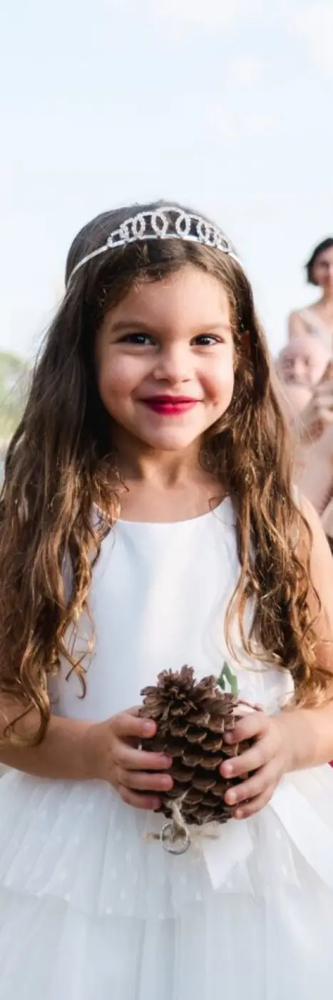
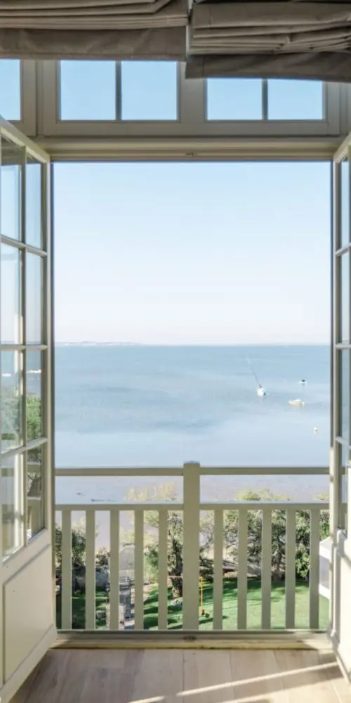
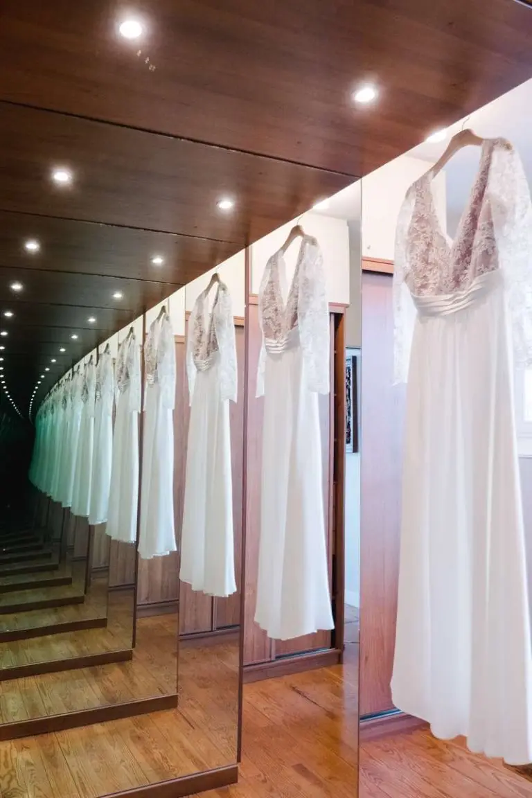
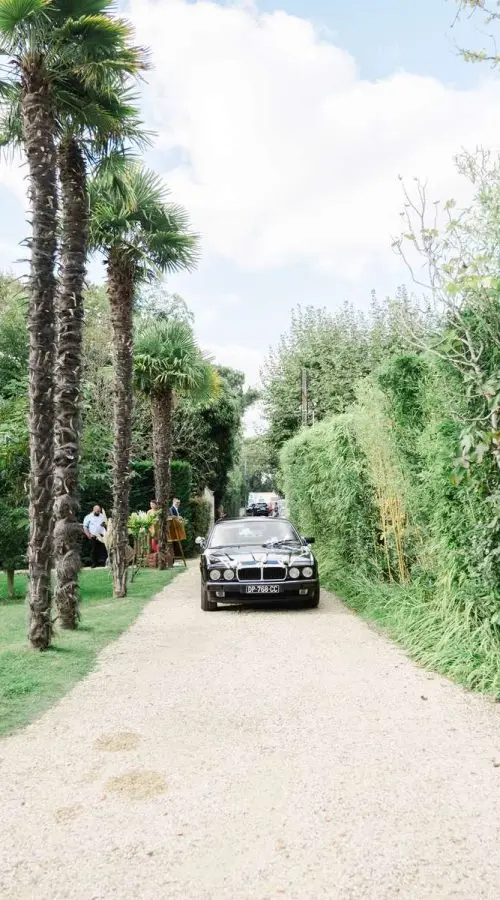

As a high-end wedding planner, I regularly receive planning requests on this theme. The Bordeaux region is the dream destination for couples who want an ocean view on the most beautiful day of their life.
Admit it, you too have dreamed of a feet-in-the-water wedding? And why not on Cap Ferret, an idyllic spot in a unique setting?
Focusing on colours that complement the ocean, such as pink and peach, creates a very romantic atmosphere, set design and decor for your wedding on the Arcachon Bay.
Getting married by the water
Those born by the water, or who live there, know that it creates a bond that never fades.
It makes you never want to live far from the waves, least of all on your wedding day.




For a perfect union, a symbolic ceremony on the beach is the ideal setting. So much love, emotion and tenderness turned these vows into a unique memory.
I'll let you discover the beauty of a bespoke waterside wedding in pictures…
Lovely Day Event offers several services
Wedding planning
I step in at every stage of your preparations and guide you through your choices, bringing ideas and suggestions so that your wedding looks like no one but you.
Wedding design
Creative and passionate, I am a certified Wedding Designer and I create a scenographic atmosphere that matches the theme of your wedding.
On-the-day coordination
I will be the conductor of your day, managing the suppliers, the set-up of your decor and the smooth running of this beautiful day.